A imagem é um elemento importante em aplicações multimídia. As imagens digitais são representadas por um conjunto de pontos. A quantidade de pontos diferentes que o olho humano pode distinguir em uma imagem é chamada resolução espacial da visão. A cada ponto chamamos pixel, do inglês picture element.
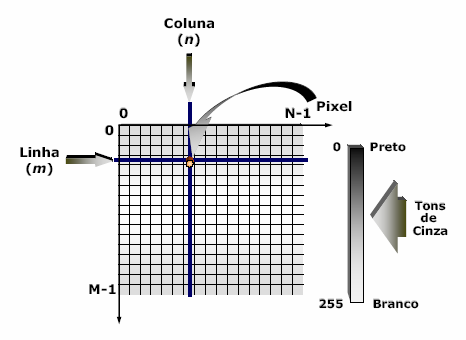
O campo visual humano pode ser comparado a uma matriz de 3000 x 3000 pontos. Este é o limite de pontos que o ser humano consegue distinguir.
https://www.youtube.com/watch?v=t6e1tgxHYt4
Os filmes de cinema apresentam resoluções maiores do que isso, pois a ilusão de participação requer a inclusão da visão periférica e da visão devida a movimentos da cabeça.
Nos monitores de televisão e de computadores a resolução é menor devido ao alto custo de sistemas de resolução mais poderosos. A televisão tradicional ( NTSC ou PAL-M ) tem resolução aproximada de 512 x 480 pontos. Nos sistemas de televisão de alta definição (HDTV) a resolução é de 1920 x 1080.
Tanto no caso do cinema quanto nos monitores de televisão a resolução é determinada por hardware, embora alguns monitores de televisão mais modernos já permitam configuração por software.
No caso de computadores a resolução é determinada exclusivamente, por software, configurando o modo gráfico diretamente no próprio sistema operacional, dentro dos limites de hardware impostos pelo monitor gráfico e pelo adaptador gráfico usados.
A palavra cor é comumente relacionada a três sentidos diferentes. A química a emprega como termo genérico ligado a corantes, pigmentos e materiais similares. A física a utiliza para referir-se a determinados fenômenos no campo da ótica. Fisiologistas e psicólogos interessam-se em entender a natureza do processo visual e a usam para denotar sensações da consciência de um observador humano (BYRNE; HILBERT, 1997).
Cor pode ser definida como a propriedade dos corpos em absorver e refletir luz, e tem como atributos principais o matiz, a luminosidade e a saturação. É o aspecto gerado pelas percepções do órgão visual em radiação eletromagnética visível de comprimento de onda entre ~380-400 a 740-750 nm, determinado basicamente pela fonte de luz e a superfície refletora (Figura 1).
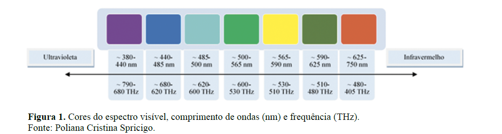
A percepção humana sobre as cores as tornam de caráter altamente subjetivo e pessoal, fazendo com que a sensação da cor seja única após complexas operações de recebimento registrado pela retina e processamento de estímulos recebidos pelo cérebro (CAMARGOS; GONÇALEZ, 2001).
A colorimetria é a ciência e o conjunto de técnicas que busca descrever, quantificar e simular com o auxílio de modelos matemáticos a percepção da cor pelos seres humanos. Trata-se da tentativa de representar a interação da luz com os materiais percebida pelo olho e interpretada pelo cérebro. As mensurações da coloração de materiais como metais, polímeros, cerâmicas, compósitos e materiais biológicos devem ocorrer preferencialmente por meio de medidas objetivas. A eliminação do caráter subjetivo possibilita a padronização das medições, pois evita variáveis relacionadas à interpretação humana e àquelas relacionadas com o ambiente. Medições objetivas são preconizadas devido a sua replicabilidade entre pesquisadores, indústria e consumidores (ABBOTT, 1999; FRANCIS, 1995).
Espectrofotômetros e colorímetros são dois tipos comuns de equipamentos apropriados para descrever numericamente elementos da composição de uma cor em superfícies (GONÇALEZ; JANIN; SANTORO, 2001). O espectrofotômetro de refletância fornece a curva de distribuição de refletância da amostra, em cada comprimento de onda da faixa de medição do instrumento, enquanto que o colorímetro separa as componentes RGB da luz, funcionado de forma análoga ao sistema visual humano.
Espectrofotômetros e colorímetros são capazes de fornecer coordenadas colorimétricas (Lab*) universais, sob iluminantes e observadores padronizados. Hoje em dia esses dados podem ser enviados pela internet e a cor reproduzida com grande exatidão rapidamente em qualquer lugar do mundo (LOPES, 2009).
A quantidade bits necessária para representar um pixel depende da representação usada para as cores, além de outras propriedades da imagem. A visão humana enxerga a luz de comprimento de onda situado entre 400 e 700 nanômetros. As luzes dentro desta faixa são percebidas como cores espectrais ou cores do arco-íris e vão do violeta ao anil, azul, verde, amarelo, alaranjado e vermelho. Destas, as faixas de maior sensibilidade ao olho humano correspondem as cores verde ( principal ), azul ( bem menor ) e vermelho ( um pouco menor ).
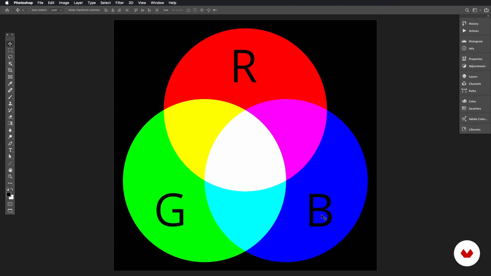
A maioria das cores que enxergamos não são cores puras mas composições resultantes de processos de emissão, reflexão, refração, difusão e absorção de luz. As cores são percebidas então como misturas de no máximo três cores básicas. Cada mistura pode ser expressa como uma combinação linear, isto é, cada cor é obtida pela soma ponderada das cores básicas.
Foram definidos sistemas de representação de cores ou modelos de cores que são usados pela indústria gráfica e por pintores. Nestes sistemas as cores são conhecidas por nomes ou por números. Para o processamento digital de imagem são necessários sistemas rigorosos de especificação que são chamados de modelos de cores.
https://color.adobe.com/pt/create/color-wheel
Os modelos de cores mais usados se baseiam na decomposição de cores em misturas equivalentes das cores básicas. Cada cor então pode ser decomposta em uma mistura das três cores básicas. O sistemas de computador suportam mais de um modelo de cores e os programas gráficos profissionais permitem ao usuário selecionar o modelo de cor que deseja usar.
Vamos ver os principais sistemas de representação de cores utilizados:
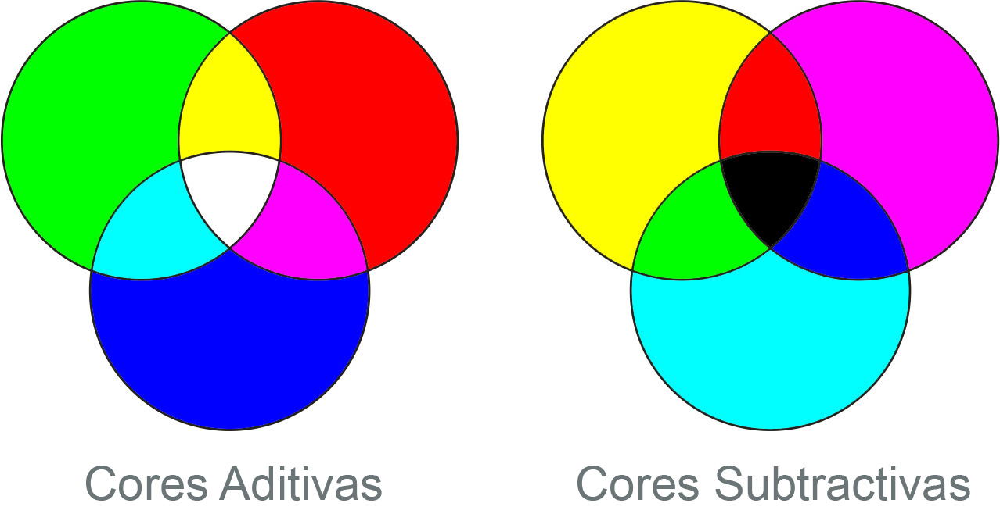Sistema Aditivo - É um dos modelos mais utilizados e é também, conhecido como sistema RGB. Este sistema é baseado nas três cores verde, vermelho e azul que são as cores de maior sensibilidade. Estas cores formam as primárias aditivas usadas no sistema RGB ( red-green-blue ). Neste sistema parte-se da ideia de que qualquer cor pode ser representada como uma soma ponderada das cores azul, verde e vermelha. Trata-se de um padrão aditivo, que adiciona e combina cores para formar novas tonalidades, sem depender da luz externa. Os dispositivos que funcionam por emissão de luz, como os televisores e monitores de computadores, funcionam de acordo com o sistema RGB. Ao combinar as três cores, obtém-se mais luz, formando a cor branca. Por outro lado, quando se sobrepõem as cores em pares (de duas em duas), ganha-se as três cores primárias (amarelo, magenta e ciano). Cada cor do sistema RGB tem uma identificação numérica, muito utilizada em softwares de projetos visuais, como o Photoshop por exemplo. Essa representação é formada por três números, que variam cada um entre 0 e 255, representando a sua intensidade de vermelho, verde e azul, respectivamente.
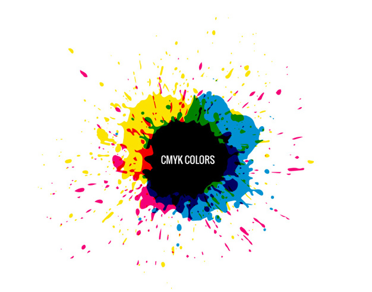
Sistema Subtrativo - É um sistema que usa as cores complementares das cores básicas que são as cores secundárias, ou seja, o ciano ( turquesa ), o magenta ( púrpura ) e o amarelo. As cores secundárias são chamadas de primárias subtrativas e são usadas nos processos de impressão colorida e fotografia. O sistema subtrativo também é chamado de sistema CMY ( ciano, magenta e amarelo ). Este sistema é o mais natural para dispositivos de cópia como as impressoras coloridas. Diferente do RGB, que é uma “cor luz”, o CMYK é um padrão de cores formado por pigmentação. Como todas as cores se sobrepõem nesse sistema, a impressão é chamada de “cromia”. O que diferencia uma cor da outra, nesse caso, é o percentual de cada pigmentação utilizada. Por exemplo: C: 22% M: 34% Y: 31% K: 19%.
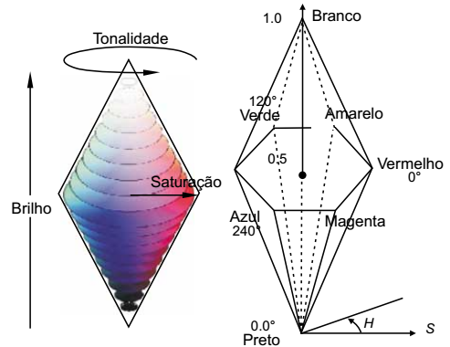
Sistema HLS - É um sistema baseado em três qualidades distintas das cores que são a intensidade ou luminância, Matiz e a Saturação. Estas são qualidades relacionadas à percepção humana e formam a base do sistema HLS. Cada qualidade é medida e por isso este sistema é também conhecido por sistema quantitativo. A seguir vamos descrever de forma simples cada uma das qualidades relacionadas à percepção que formam a base do sistema HLS.
Intensidade (brilho) - Tem a ver com a amplitude da vibração luminosa, com a energia e é o parâmetro da cor para o qual o olho humano é mais sensível.
Matiz (Tonalidade) - Mede a qualidade que distingue o azul do verde, do vermelho, etc.
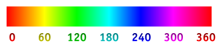
Saturação - Mede o grau de pureza de uma cor em relação a contaminação por outras cores. Saturação é a proporção de quantidade de cor em relação à cor cinza média. Quanto menos cinza na composição da cor, mais saturada ela é.
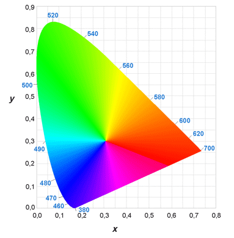
O sistema CIE - É um sistema baseado em três cores imaginárias e invisíveis, chamadas X, Y e Z.
Nesse sistema, as cores são definidas de tal modo que qualquer cor visível possa ser expressa como combinação linear dessas cores básicas.
Este sistema é definido pela International Commission on Illumination.
Gamas
Chamamos Gama ao conjunto de cores que pode ser produzido a partir de determinadas primárias. Quanto mais saturadas as cores primárias, maior a gama. A gama dos monitores profissionais é maior do que os televisores. Isto significa que as cores mais saturadas produzidas em um sistema de computação gráfica não podem ser corretamente reproduzidas em um televisor, são reproduzidas de forma distorcida.
Codificação das Cores
Quantização das Cores - Em sistemas baseados em cores primárias, é preciso prever a possibilidade de imagens formadas por pontos que se distinguem pela luminância, independente do Matiz e Saturação da cor. É necessário que haja 8 bits por pixel para cada cor primária, correspondendo à sensibilidade do olho humano que pode distinguir até 256 diferentes níveis de luminância. Os sistemas baseados neste princípio podem reproduzir até 16 milhões de cores diferentes e são denominados sistemas de cor verdadeira.
https://www.w3schools.com/colors/colors_picker.asp
Paletas e dithering
Quando a capacidade de reprodução de cores do sistema for menor do que a dos sistemas de cor verdadeira é preciso usar o conceito de paleta que usa uma tabela armazenada em memória e que faz o mapeamento de cada pixel para um valor que é enviado para os dispositivos gráficos. Esta tabela é chamada de paleta ( palette ) ou tabela de cores ( color look-up table ).
As imagens produzidas em sistemas de pixels de 8 bits normalmente não são realistas. Pode-se, nestes casos, trocar a resolução espacial por resolução de cores, representando-se cada ponto da imagem por um grupo de pixels vizinhos. Esta técnica é conhecida como dithering.
Codificação da Transparência
Considerando que o número de bits da unidade de endereçamento ( palavra ) do computador normalmente é uma potência de 2, sistemas de 15 bits são acomodados em pixels de 16 bits. O bit extra é usado para codificar a transparência da imagem. Assim cada pixel será transparente ou opaco conforme o valor do bit extra for 1 ( ligado ) ou zero ( desligado ). Está técnica é útil para composição de imagens geradas por processos diferentes, permitindo realizar efeitos sofisticados de combinação de imagens, títulos de alta qualidade, mistura de imagens ao vivo com computação gráfica e efeitos de transição de imagens.
Dispositivos Gráficos
Dispositivos de Saída Gráfica
São os dispositivos gráficos que apresentam ao ser humano a representação das imagens geradas por computador.
Tipos de dispositivos
Os dispositivos gráficos de saída são classificados em dispositivos interativos e os dispositivos de cópia permanente ( hard copy ).
Os principais dispositivos interativos usados atualmente são:
https://youtu.be/jHKi6Dk9izo
Monitores de Cristal Líquido (LCD) - Usados em computadores portáteis e painés gráficos. Funcionam por reflexão de luz através de pequenas células formadas por cristais líquidos.
Monitores Eletrolumiescentes ( LEDS) - Usados em dispositivos que devem ser lidos em situações de baixa iluminação, como painés de carros e telefones celulares, por emitirem luz própria. Funcionam com o uso de diodos semicondutores que emitem luz sob aplicação de corrente elétrica.
Monitores de Plasma - Usados em telas grandes, leves e planas, que podem ser montadas em paredes.
As tecnologias acima possuem peso e volume menores do que os antigos televisores que usavam tubos de raios catódicos.
Os dispositivos de cópias permanentes são usados para armazenamento de imagens fora do computador, registradas em papel ou em outros meios físicos. São exemplos de meios físicos:
Os traçadores de gráficos (plotters) que são dispositivos vetoriais que desenham por linhas ao invés de pontos ( pixels ).Eram usados em aplicações técnicas como arquitetura, para desenho de plantas, que exigiam desenhos em tamanho grande. Atualmente são dispositivos obsoletos pois foram substituídos por aplicações de computação gráfica como CAD CAM.
As impressoras que são dispositivos que trabalham gerando ponto a ponto. A tecnologia em uso atualmente é a impressão à laser que é muito usada por sua alta qualidade de impressão e rapidez. Para uso pessoal, se usa a impressão à jato de tinta que são mais baratas e possuem boa qualidade de impressão, alem de serem de fácil uso.
Os registradores de filmes que são dispositivos que gravam as imagens diretamente em filmes fotográficos, permitindo imagens de alta resolução, com ampla gama de cores e a possibilidade de pós-processamento fotográfico, que pode ser feito por software de edição de imagem como o photoshop da Adobe.
Os gravadores de vídeo que são dispositivos usados para registro de imagens animadas em meio formato digital. Estão sendo gradualmente substituídos por dispositivos óticos tais como DVD e Blue Ray.
Arquitetura de Sistemas Gráficos
Sistemas baseados em monitores possuem arquitetura complexa pois levam em conta muitos parâmetros que determinam a relação custo/benefício do sistema gráfico. Também existem várias alternativas de conexão para os diversos componentes que foram um subsistema de saída gráfico.
Sincronismo
O sincronismo diz respeito à forma com que os feixes de elétron varrem a tela que corresponde a um quadro com linhas que são varridas de forma sequencial. Assim a tela é dividida em linhas de varredura, que são varridas sequencialmente.
Parâmetros de Varredura
Os monitores de televisão de origem americana, brasileira e japonesa trabalham com uma frequência de varredura vertical de 60 quadros.
A frequência vertical pode ser calculada multiplicando-se a frequência vertical pelo número de linhas do quadro.
O parâmetro faixa de passagem, utilizado para monitores gráficos, é calculado multiplicando-se a frequência horizontal pelo número de pixels por linha e pelo número de bits por pixel dividido por 2. A faixa de passagem é um parâmetro fundamental de custo do monitor. Os parâmetros de varredura variam de acordo com o sistema utilizado ( TV, VGA, 1280 x 1024 ).
Varredura Entrelaçada
Um artifício usado para reduzir pela metade a faixa de passagem consiste em refrescar alternadamente o conjunto de linhas pares e linhas ímpares. chamados campos dos quadros. Esta técnica se chama varredura entrelaçada.
Escolha de Monitores
Atualmente os monitores de tela plana são mais usados pois são mais leves, consomem menos energia, ocupam menos espaço e cansam menos a vista. Porém possuem ângulo de visão mais restrito e alguns só são vistos confortavelmente de frente.
Quanto maior a tela melhor para se trabalhar em ambientes gráficos, permitindo o uso de janelas e fontes de texto maiores.
A resolução recomendada depende do tamanho da tela, da tecnologia usada e da acuidade visual do usuário. Telas de cristal líquido permitem resoluções mais altas e a resolução máxima confortável diminui com a idade e outros fatores que afetem a condição visual do usuário.
Os tamanhos usados para computadores de mesa variam de 15" a 20" e para computadores portáteis ( notebooks e netbooks ) de 10", 13! a 15".
Há ainda sistemas maiores que são usados para televisão ou para apresentações com o uso de sistemas de projeção, incluindo tecnologias como paredes de monitores.
Adaptadores Gráficos
É o dispositivo de hardware que serve de interface entre o sistema operacional e o monitor. Basicamente é uma placa conectada à placa-mãe mas que pode estar também embutida ( on-board ) na placa mãe. Este dispositivo que contém a memória de imagem onde ficam armazenados os pixels de cada imagem exibida. O tamanho desta memória determina a resolução disponível no computador e o número de cores suportada.
Processadores Gráficos
É o dispositivo que controla o adaptador gráfico e com isso libera o processador central para outras tarefas não relacionadas ao processamento gráfico. As operações realizadas pelo processador gráfico incluem transformações geométricas, conversões de representação geométrica para matriciais e alguma das principais operações matriciais, além de suporte para programação Open-GL e DirectX. Os processadores gráficos mais recentes possuem recursos poderosos para computação paralela.
Dispositivos de Entrada Gráfica
São os dispositivos através dos quais o usuário comanda o ambiente e programas gráficos. Os dispositivos de entrada gráfica bidimensional podem ser divididos nas classes abaixo:
Dispositivo de Teclado - Usados para digitação de comandos ou parâmetros.
Dispositivo Posicionador - Também conhecidos como dispositivos apontadores, são usados para realizar tarefas de apontamento, seleção e arraste. As telas de toque também funcionam como dispositivos apontadores e são usadas em notebooks.
Dispositivo de escolha - Representam uma simulação de teclado através de posicionadores ou teclados comuns.
Dispositivo avaliador - Fornecem um valor escalar, com os controles giratórios. Podem ser simulados com o uso de controles deslizantes do tipo sliders ou com barras de rolagens usadas em janelas.
Dispositivo de traçado - Fornecem sequências de coordenadas, permitindo a digitalização de desenhos em papel.
Processamento de Imagem
Formatos de Imagens
Existem muitos formatos diferentes para armazenamento de imagens em arquivos. As imagens são representadas como um arranjo retangular de pixels, chamado de mapa de pixels. Fala-se em mapa de bits quando temos imagens com um bit por pixel.
É importante que seja feita uma escolha cuidadosa do formato a ser utilizado para os arquivos de imagens em um projeto multimídia. Devem ser consideradas as seguintes características:
Os principais formatos em uso atualmente são os seguintes:
Operações com Imagens
As operações de processamento de imagens são muito variadas e possui muitas aplicações de natureza técnica. Vamos apresentar as principais operações com Imagens para produção de títulos multimídia.
Podemos dividir em dois grupos de operações de imagens:
Processamento no domínio espacial: São as operações feitas sobre os pixels isolados de cada imagem.
Processamento no domínio da frequência: São as operações que requerem análise global de áreas contíguas da imagem.
São exemplos de operações de processamento no domínio espacial:
São exemplos de operações de processamento do domínio da frequência:
Compressão de Imagens
Imagens de boa qualidade ocupam espaço em disco e em memória. Imagens com cor verdadeira e alta resolução podem ocupar até vários megabytes de espaço. Assim a redução do tamanho dos arquivos de imagens é feita através de técnicas de compressão de imagens estáticas. As principais técnicas são apresentadas a seguir:
Compressão sem perdas - Esta técnica mantêm toda a informação da imagem original. A compressão é feita através da técnica de codificação. Esta técnica é usada em comunicação de dados, com modens e para compressão de arquivos. O formato .ZIP é o mais comum atualmente. Outros formatos usados são TAR e Gzip que são usados em sistemas Unix. A compressão usa técnicas genéricas que se aproveitam de características das imagens.
Compressão com perdas - Esta técnica é usada em casos em que a perda de alguma informação ou qualidade da imagem é tolerável. Esta técnica ao comprimir a imagem perde alguma informação da imagem original. A taxa de perda é um parâmetro fixado durante a compressão. Quando maior a perda admitida, maior a compressão que se consegue.
Os desenhos são figuras que são representadas por entidades provenientes da geometria. Assim, os desenhos são baseados na combinação de construções geométricas. São criados a partir de editores de desenhos que imitam as ferramentas de desenho convencional.
No computador, os desenhos são armazenados na forma de arquivos geométricos ou metarquivos gráficos. Eles permitem o armazenamento de figuras sintéticas em formatos mais compactos do que os que arquivos de imagens. Representam as figuras na forma de coleções de entidades geométricas. Do ponto de vista do computador, um arquivo de desenho contém registros de dados que descrevem conceitos da geometria. Esta descrição é feita com o uso de meta-dados, dado que descreve outro dado, no caso descrevem as formas geométricas que compõem o desenho. Estes arquivos também são chamados de arquivos vetoriais devido a importância que os vetores da geometria tem na descrição computacional dos desenhos.
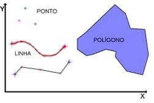
Os metaarquivos são importantes também porque são eles que contém a informação útil para muitas aplicações, como programas de editoração eletrônica, ilustração gráfica e animação. Em outras aplicações, a informação vetorial pode ser integrada a bases de dados especiais de determinada área, como no caso de projeto assistido por computador ( CAD ), sistemas arquitetônicos e de engenharia ou sistemas de informação geográfica.
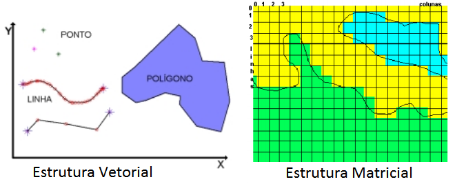
Vetorização é o processo de passagem do domínio de imagens formadas por pixel para o domínio de imagens formadas por entidades geométricas. Esse processo é usado para digitalização de mapas: As cartas geográficas são capturadas por scanners e um algoritmo sofisticado extrai da imagem captada as entidades geométricas que irão compor o desenho tais como linhas e caracteres.
É o processo inverso, onde uma imagems matriciais, matriz de pontos, é convertida para o formato geométrico. Assim as imagens matriciais também podem ser geradas por programas de computador, a partir de descrições de uma cena em termos geométricos. A descrição dos elementos geométricos é feita com o uso de metadados. A passagem do modelo geométrico, situado no espaço geométrico, para o modelo matricial, situado no espaço de imagens, é chamado conversão de varredura, rastelação, elaboração ou síntese.
Os metarquivos são compostos de registros que descrevem entidades gráficas. Para alguns formatos, essa representação tem forma de texto legível. Os metarquivos contem apenas a definição geométrica para intercâmbio de informação gráfica.
Alguns formatos de metarquivos comuns são:
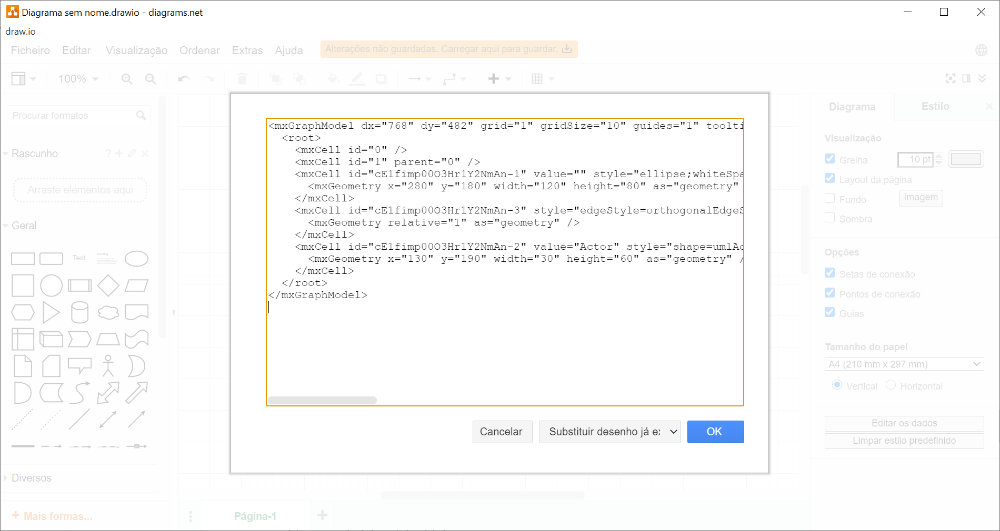
O Draw.io é um editor gráfico online no qual é possível desenvolver desenhos, gráficos e outros sem a necessidade de usar um software caro e pesado. Ele disponibiliza recursos para criação de qualquer tipo de desenho porém, possui uma parte dedicada à arquitetura da informação.
Download: https://github.com/jgraph/drawio-desktop/releases
Atividade Prática 1
A google disponibiliza um editor gráfico de imagens no formato svg. O SVG Edit pode ser acessado na maioria dos browsers e está disponível no endereço
https://code.google.com/p/svg-edit/.
Acesso o endereço https://code.google.com/p/svg-edit/
Clique no link trunk build demo
Construa um desenho e salve no formato SVG
Abra o arquivo SVG gerado e visualize no seu navegador
Agora abra o arquivo utilizando o editor de textos notepad e veja que o arquivo usa o formato xml.
Os arquivos vetoriais possuem as seguintes vantagens em relação aos arquivos de imagens:
Por outro lado existem alguns problemas com a representação de figuras por arquivos vetoriais:
Os editores gráficos bidimensionais são as ferramentas usadas para criação e edição de figuras em formato geométrico. São usados para criação de desenhos dentro de um contexto de multimídia mas podem ser usados para outras áreas de tecnologia e negócios. As funções básicas de um editor de desenhos são:
O programa GIMP possui uma versão portável que pode ser instalada diretamente no pen-drive ou em um hd externo. O GIMP portável pode ser baixado no endereço http://portableapps.com/apps/graphics_pictures/gimp_portable.
O programa Blender também possui uma versão portável que pode ser baixada no endereço: http://portableapps.com/apps/graphics_pictures/blender_portable
Atividade Prática 2
Pesquisar na Internet pelo menos duas ferramentas da lista acima e descrever os principais recursos, sistemas operacionais suportados e funcionalidades
de cada ferramenta. Fazer um compartativo entre as duas ferramentas. Anotar no caderno as funcionalidades, recursos e requisitos de cada ferramenta.
Baixar a ferramenta Blender, versão portável, da página de recursos.
Utilizando a ferramenta Blender, fazer os exercícios 1, 2 e 3 que estão no site na página recursos.
As entidades gráficas são compostas por primitivas gráficas que são as entidades mais elementares e que são fornecidas diretamente pelos programas gráficos utilizados. São descritas em termos da álgebra, através de equações. Uma classificação delas pode ser feita pelo grau das equações usadas para descrevê-las. As primitivas mais usadas são as lineares ( primeiro grau ), as quadráticas ( segundo grau ) e as cúbicas ( terceiro grau ). As primitivas de cada grau podem ser bidimensionais ou tridimensionais.
As primitivas lineares bidimensionais são as entidades básicas às quais as demais primitivas são reduzidas. São baseadas em retas e polígonos. São suportadas diretamente pelo hardware de aceleradores e coprocessadores gráficos. São usadas as seguintes primitivas lineares:
Essas primitivas podem ser geradas por um programa em um dos formatos gráficos textuais, como o SVG.
Outros tipos de primitivas encontradas nos programas gráficos bidimensionais. São baseados em parábolas e curvas.
As curvas cúbicas são formadas pela concatenação de trechos de curva que podem ser descritos por equações de terceiro grau. Elas tem a propriedade de conservar a curvatura nas ampliações. A grande vantagem das cúbicas é que elas permitem modelagem rápida e flexível de contornos, incluindo os contornos desenhados à mão livre.
Os caracteres de texto representam um conjunto de símbolos de grande importância em qualquer aplicação. Em ambientes gráficos e multimídia o papel do texto é valorizado pela variedade de formas que eles podem adquirir pois o texto tambem é representado como desenho, uma imagem. A escolha da representação gráfica para os textos é fundamental para a legibilidade, beleza, estética e qualidade de um título multimídia. Os atributos dos textos incluem:
As estruturas gráficas são usadas na composição dos desenhos e são reaproveitadas em mais de uma parte de um desenho. São recursos para complementar o trabalho de desenho. Os metarquivos podem ser mais do que coleções não estruturadas de entidades gráficas. Os seguintes tipos de extensões permitem que os arquivos sejam mais compactos e de uso mais flexível:
Basicamente temos dois tipos de transformações gráficas em um Desenho: As Transformações Bidimensionais e as Transformações de Visualização.
As transformações lineares são as operações que podem ser aplicadas sobre as entidades geométricas que podem ser descritas por fórmulas lineares, baseadas em equações do primeiro grau. Em termos computacionais são operações fáceis de calcular e rápidas.
São operações que transformam a figura definida de um espaço de aplicação em um espaço de exibição. O processamento das escalas da figura é feito pelo programa e o desenhista pode dimensionar a figura em milímetros, metros ou quilômetros, dependendo do que for mais adequado para a aplicação. A transformação de visualização, a partir das entidades geométricas expressas nas unidades escolhidas pelo desenhista, gera as entidades equivalentes nas unidades do monitor ou impressora.
Nos desenhos bidimensionais algumas transformações não lineares são usadas para efeitos especiais. Essas transformações incluem:
https://www.youtube.com/embed/WLM6-By0qBg
Áudio é causado pelo distúrbio da pressão de ar que alcança o tímpano. Quando a freqüência do distúrbio de ar está na faixa de 20 Hz a 20.000 Hz ele é audível. A maioria dos sistemas multimídia trabalham com esta faixa de freqüência. Outro parâmetro usado para a medição do som é a amplitude (medido em decibéis - dB), variação que causa o som leve ou pesado. Por exemplo, o limiar da dor é de 100 a 120 dB.
O ouvido humano é o órgão responsável pela nossa audição e pelo nosso equilíbrio. O ouvido encontra-se dividido em três partes: o ouvido externo, o ouvido médio e o ouvido interno.
O ouvido externo é constituído pelo pavilhão auditivo, pelo canal auditivo e pelo tímpano e é responsável pelo direcionamento das ondas sonoras para as regiões mais internas do ouvido. O ouvido médio que se encontra após o tímpano é constituído por três ossos interligados, o martelo, a bigorna e o estribo, onde as ondas sonoras são amplificadas. É igualmente constituído pela trompa de Eustáquio que mantém a pressão nesta zona. O ouvido interno é onde se situam as estruturas responsáveis pelo equilíbrio e pela conversão das ondas sonoras em sinais elétricos é constituído pela cóclea, órgão que distingue a freqüência e a intensidade do som, os canais semicirculares e o nervo auditivo.
A vibração de alguma coisa produz como resultado várias ondas de pressão em todas as direções e, uma vez chegando aos tímpanos experimentamos estas vibrações como sons. No ar, e ao nível do mar, o som se propaga a uma velocidade de ~1.207 Km/h (1 Mach). Som é energia, como a das ondas que quebram em uma praia; muito volume pode danificar os mecanismos delicados de recepção de som dos tímpanos.
Os níveis de pressão do som (intensidade ou volume) são medidos em decibéis ou dB; uma medida de decibel é a taxa entre um ponto de referência escolhido em uma escala logarítmica e o nível que realmente é experimentado.
https://www.youtube.com/embed/FLUwYCHFVas
Nas primeiras experiências de armazenamento de som ainda em formato analógico, as músicas (ou sons) eram armazenadas em um único canal, chamado monofônico. Com a sucessiva necessidade de se reproduzir o som com mais realidade e sensação de envolvimento, criou-se um segundo canal para que se pudesse, através do aparelho reprodutor, transmitir a sensação de localização e movimento para o ouvinte em relação ao som emitido e vice-versa.
Aos sistemas capazes de reproduzir tais canais, chamou-se de estéreo (stereo). Com a evolução do cinema e grandes salas de teatro, o som estéreo tornou-se insuficiente, dando lugar aos chamado som multi-canal.
Muito embora o som multicanal ou som surround já estivesse pontualmente presente nas salas de cinema desde o início da década de 50, o grande boom ocorreu com o lançamento de “Guerra nas Estrelas”, de George Lucas, em 1977. O seu grande objetivo foi, e continua a ser, o tornar a experiência cinematográfica mais intensa, proporcionando uma total imersão no coração da ação. Mas, se durante muitos anos este tipo de sensações só foi possível numa sala de cinema, a verdade é que hoje em dia qualquer pessoa pode desfrutar no seu próprio lar de tecnologias altamente sofisticadas que recriam com todos os pormenores um ambiente de cinema.
Dolby Stereo, Dolby Surround, DTS, THX, são alguns exemplos de formatos de som multicanal.
Este tipo de codificação permite reunir mais de um canal de informação (tal como Frontal Left – FL, Central – C, Frontal Right – FR, Surround Right – SR, Surrond Left – SL, Low Frequency Effects – LFE etc) em canais estéreo, passíveis de serem reproduzidos em equipamentos estereofônicos.
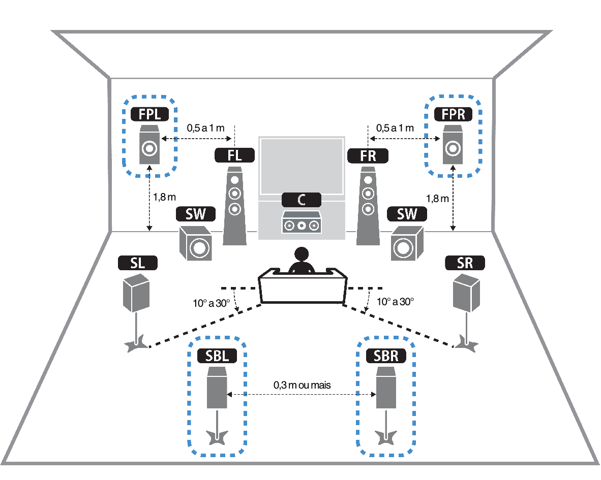Em sistemas analógicos o sinal sonoro é representado por um sinal magnético ou elétrico, com amplitude proporcional à amplitude do sinal acústico original. Nos dispositivos e sistemas eletrônicos, incluindo aí os computadores, o sinal sonoro é representado por uma sequência de números, que são compostas por bits 0 e 1.
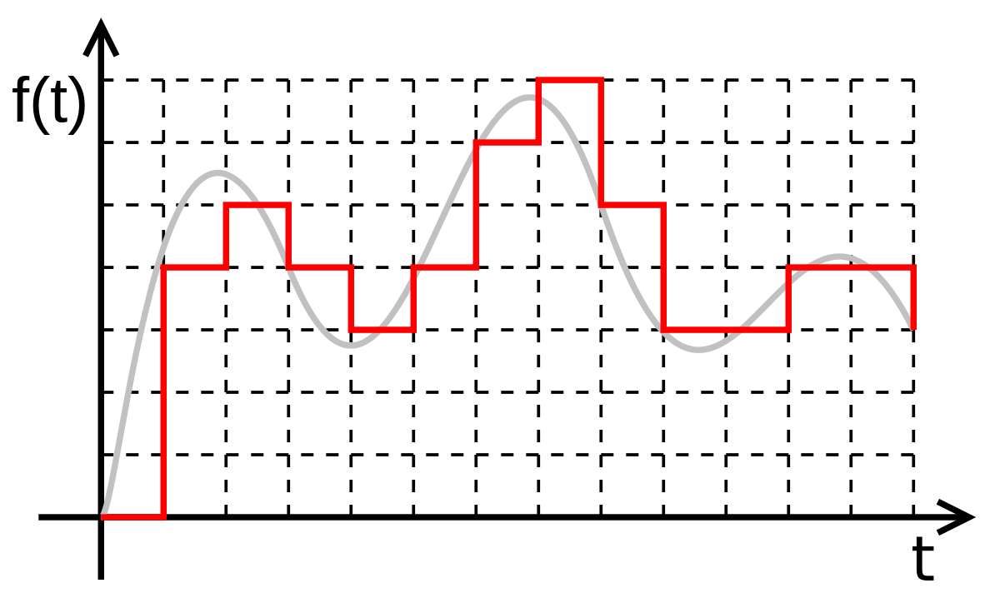São exemplos de sistemas digitais de som:
Os sistemas digitais são muito mais imunes à ruídos do que os sistemas analógicos e isso proporciona melhor qualidade do som nas operações de reprodução de um sinal digital.
Se um sinal analógico for copiado sucessivas vezes a última cópia tem uma qualidade muito abaixo da qualidade da cópia original. Um exemplo disso são as cópias das antigas fitas K7. Uma copia feita a partir de outras cópias tinha qualidade de som muito inferior.
Porém em um sinal digital a cópia é tão boa quanto a cópia original, não importando o número de cópias que sejam feitas ou se a cópia é feita a partir de uma outra cópia ou da cópia original. A qualidade do som em um sinal digital se mantêm em processos de cópia desde que o sistema digital estiver funcionando corretamente.
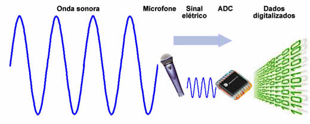
O processo de conversão do som analógico para som digital consiste em converter o sinal elétrico em um sinal digital é chamado de digitalização do som. O sinal elétrico analógico, proveniente de microfones ou de equipamentos analógicos de reprodução, é convertido em uma sequência de números, num processo chamado conversão analógico-digital, ou conversão A/D.
O processo inverso, que reproduz o sinal analógico de som, pronto para ser amplificado e enviado aos alto-falantes, é chamado de conversão digital-analógica, ou conversão D/A.
A tendência é que a conversão de som no formato analógico para o formato digital, processo de digitalização, seja a conversão mais comum e que gradativamente o formato analógico seja abandonado.
Para que um som possa ser armazenado em meio digital, ele precisa ser convertido para o formato digital, através de um processo chamado sampling.
Sampling: sampling é o processo de captar momentos de um sinal analógico em transformação (como pequenas "fotografias" digitais), convertê-los em sinal digital e corrê-los numa sucessão contínua, reproduzindo-se, desta forma, o sinal original.
Sampling rate: é a freqüência (medida em Hertz) da fotografia tirada do sinal analógico. Quanto maior for este número, mais perto do original será a reprodução digital. No caso do CD, a sampling rate – ou a quantidade de fotografias tiradas por segundo – é de 44,1KHz, ou seja, são tiradas mais de 44 mil imagens do som por segundo.
Sample size: é o tamanho (medido em bits) da fotografia tirada do sinal analógico.
Quanto maior for o sample size (ou resolução), melhor será a representação do original. Um CD tem uma resolução de 16 bits.
A figura a seguir traz a representação de ondas sonoras em um trecho musical em formato digital. À esquerda temos a representação gráfica simples de uma única amostra da onda, enquanto à direita temos a representação em 3D de sucessivas amostras da onda, ou seja, a execução contínua do som.
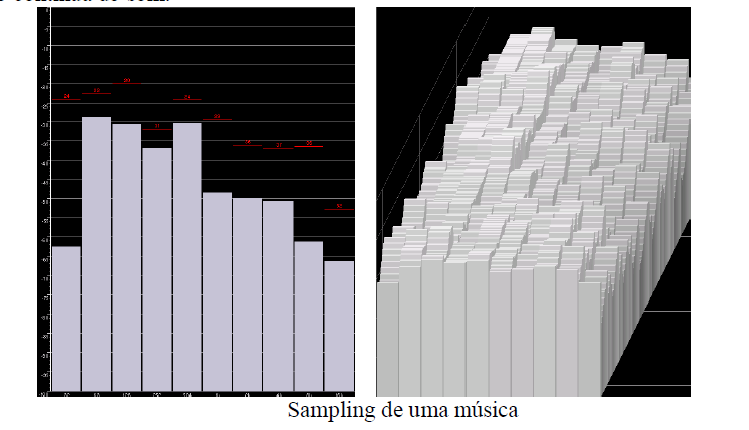
Esta seção apresenta a forma de digitalização dos vários tipos de mídias de apresentação. Digitalização aqui é o processo envolvido na transformação de sinais analógicos em sinais digitais:
Para a conversão de sinais analógico em digital é necessário a realização de três passos: amostragem, quantificação e codificação.
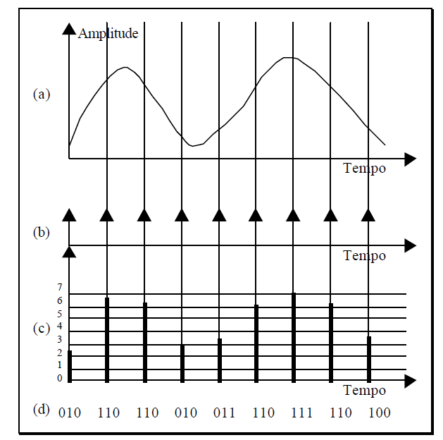
Figura: Conversão A/D [Lu, 96]: (a) sinal analógico; (b) pulsos de amostragem; (c) valores amostrados e intervalos de quantificação; (d) seqüência digital
Nesta etapa um conjunto discreto de valores analógicos é amostrado em intervalos temporais (p.e., para sons) ou espaciais (p.e., para imagens) de periodicidade constante, como apresentado na figura a. A freqüência de relógio é chamado de taxa de amostragem ou freqüência de amostragem. O valor mostrado é mantido constante até o próximo intervalo. Isto é realizado através de circuitos sampling and hold. Cada uma das amostras é analógica em amplitude: ele tem qualquer valor em um domínio contínuo. Mas isto é discreto no tempo: dentro de cada intervalo, a amostra tem apenas um valor.
Se um sinal analógico contem componentes de freqüência até f Hz, a taxa de amostragem deve ser ao menos 2f Hz. Na prática, esta freqüência é um pouco maior que 2f Hz. Por exemplo, a taxa de amostragem de CDaudio é de 44,1 kHz, e dos tapes de áudio digital (DAT) é de 48kHz para cobrir uma faixa audível de freqüência de 20 kHz. Outro exemplo, os componentes principais de freqüência da voz humana estão dentro de 3,1 kHz, com isto os sistemas de telefonia analógicos limitam o sinal transmitido a 3.1 kHz; é comum usar uma freqüência de amostragem de 8 kHz para converter este sinal em digital.
O processo de converter valores de amostras contínuas em valores discretos é chamado de quantificação. Neste processo nós dividimos o domínio do sinal em um número fixo de intervalos. Cada intervalo tem o mesmo tamanho e recebe um número. Na figura c estes intervalos são numerados de 0 a 7. A cada amostra dentro de um intervalo é atribuído o valor do intervalo.
O tamanho deste intervalo de quantificação é chamado de passo de quantificação. A técnica que utiliza o mesmo passo de quantificação é chamada modulação PCM (Pulse Coded Modulation). Algumas vezes, nem todos os valores amostrados são retidos após a quantificação. No caso ilustrado pela figura c, todos os valores amostrados foram retidos.
A codificação consistem em associar um conjunto de dígitos binários, chamado de codeword, a cada valor quantificado. No caso da figura d, oito níveis de quantificação são usados. Estes níveis podem ser codificados usando 3 bits, assim cada amostra é representada por 3 bits.
Em algumas aplicações de telefonia, a digitalização da voz humana utiliza 16 bits por amostra, que então leva a 216 ou 65.536 passos de quantificação. Em outras aplicações de compressão de voz, algumas vezes, apenas 8 quantificações por bits são necessários, produzindo apenas 256 passos de quantificação.
Taxa de bits é definida como o produto entre taxa de amostragem e o número de bits usados no processo de quantificação. Por exemplo, supondo uma freqüência de 8k Hz e 8 bits por amostra, a taxa de bits necessária à telefonia é igual a 8000x8 = 64 kbps.
Existem questões muito interessantes relacionadas mais à acústica do que propriamente ao volume e ao pitch. Há vários textos que discutem, por exemplo, o fato de o dó em um violão não soar como o de um piano, ou do fato de uma criança poder ouvir sons em determinadas freqüências impossíveis de serem ouvidas por adultos com audição prejudicada devido à idade.
Em projetos multimídia normalmente não se exige conhecimentos especializados em harmonia, intervalos, ondas notações, oitavas ou física de acústica ou vibração. Entretanto é necessário saber:
O som pode ser usado imediatamente tanto no Macintosh quanto no PC, pois os bips e avisos do sistema estão disponíveis assim que o sistema operacional é instalado. Em versões do Windows inferiores ao W2000, normalmente quando se executa arquivos do tipo WAV por meio de um alto falante da placa do PC todas as interrupções são desativadas automaticamente, fazendo o mouse ou o teclado ficarem inativos ao executar os sons.
Pode-se digitalizar som a partir de qualquer fonte natural ou pré-gravada (microfone, fitas K7 etc.). O som digitalizado é “amostrado”, isto é, em uma pequena fração de segundo uma amostra do som é capturada e armazenada como informação digital (bits e bytes). A freqüência com que as amostras são capturadas determina a taxa de amostragem. A quantidade de informações armazenadas a cada amostragem determina o tamanho da amostra. Quanto maior a freqüência de captura e mais dados armazenados maior a resolução e a qualidade do som capturado.
É impossível reconstruir a forma da onda original se a freqüência da amostragem for muito baixa. As três freqüências de amostragens mais usadas na multimídia são 44.1kHz, 22.05 kHz e 11.025 KHz. Os tamanhos das amostragens são:
Existe um padrão internacional, ISO 10149, para codificar digitalmente o estéreo de alta qualidade do mercado consumidor de música em CD. Os desenvolvedores deste padrão declaram que o tamanho da amostragem de áudio e a taxa de amostragem (16 bits @ 44,1 kHz) permitem a reprodução exata de todos os sons que os seres humanos podem ouvir.
Para armazenar 11 segundos de som stereo pode-se gastar até 1 MB de disco. O som monoaural (mono) normalmente consome a metade dos recursos do stereo. Técnicas de compactação podem permitir a redução em 8 vezes o consumo de espaço, perdendo-se entretanto na fidelidade do som. Para saber o consumo de disco para apenas alguns segundos de gravação, podem-se utilizar as fórmulas:
Bytes por segundo = (taxa de amostragem * bits por amostra) / 8
Gravação mono: Tamanho_arquivo = taxa_amostragem x duração_gravação x (bits por amostra / 8) x 1
Gravação stereo: Tamanho_arquivo = taxa_amostragem x duração_gravação x (bits por amostra / 8) x 2
No ato do armazenamento em disco surgem algumas perguntas importantes e que se não respondidas corretamente podem levar a ocorrência de graves problemas na reprodução do som, são elas:
É um padrão, de domínio público da indústria, desenvolvido no início dos anos 80 que permite que os sintetizadores de música e som de diferentes fabricantes se comuniquem entre si enviando mensagens via cabos conectados nos dispositivos. Dentro da MIDI há também um protocolo para passar descrições detalhadas de uma partitura musical tais como as notas, as seqüências de notas e qual instrumento as tocarão. Um arquivo MIDI é significativamente menor (por segundo de som transmitido para o usuário) do que arquivos equivalentes de formas de ondas digitalizadas.
Necessita-se de um programa seqüenciador e de um sintetizador de som (em geral existente nas placas de som de PCs). Um teclado MIDI também é útil para simplificar a criação de partituras musicais. Entretanto o mesmo não é necessário para a execução da música. O programa seqüenciador grava suas ações no teclado MIDI (ou em outro dispositivo) em tempo real e tocará exatamente as notas que você tocou no teclado; uma cópia da partitura também pode ser impressa no papel.
Os sons MIDI são gerados a partir de: Fórmulas matemáticas (síntese FM), mais baratas.
Gravações digitais curtas de instrumentos reais (amostragens), melhor fidelidade.
A escolha entre estas duas técnicas envolve considerações de hardware e custos.
Criar arquivos MIDI é tão complexo quanto gravar bons arquivos de amostragens, então é melhor investir para encontrar alguém que já tenha configurado o equipamento e as habilidades para criar sua partitura, em vez de investir em hardware e aprender música. Para uma pessoa que conhece música “de ouvido”, mas não consegue ler uma partitura, a MIDI é de grande utilidade. O programa seqüenciador pode ajudar a criar a música ideal para as apresentações em computador.
A maioria dos desenvolvedores grava seus materiais de som em fitas K7 como primeiro passo no processo de digitalização.
Com a fita, é possível fazer muitas tomadas do mesmo som ou voz, ouvir todas elas e selecionar as melhores para digitalizar. Gravando em uma mídia barata em vez de diretamente no disco, você evita preencher seu disco rígido com “lixo”.
Projetos que requerem som com a qualidade de CD (41,1 kHz e 16 bits) devem ser desenvolvidos em estúdios profissionais. A gravação de som de alta fidelidade é uma arte especializada, uma habilidade aprendida em grande parte por tentativas e erros, como na fotografia. Ao desejar fazê-lo por si só em níveis de qualidade de CD, o desenvolvedor deve estar preparado para investir em uma sala tratada acusticamente, com amplificadores e equipamentos de gravação de alta fidelidade e microfones sofisticados.
Gravações em 22,05 kHz podem ser realizadas em gravadores K7, por exemplo: gravações de conversas telefônicas. Gravadores de vídeo K7 normalmente possuem excelentes circuitos de áudio stereo e foram muito utilizados no início. Uma gravação em alta fidelidade requer grande espaço de memória: 176,4 Kb por cada segundo de áudio em qualidade stereo amostrado em 16 bits a 44,1 kHz por canal.
Fornecem gravação em 16 bits a 44,1 kHz e capacidade de reprodução com um consumo de memória de 176,4 Kb por cada segundo de áudio em qualidade stereo gravado. Esse sistema é muito preciso e poderá gravar até ruídos de fundo, estalos do microfone e tosses vindas da sala ao lado, necessitando de um bom editor para eliminar estes ruídos.
Há um mínimo aceitável de adequação que satisfará o público, mesmo quando este nível não for o melhor que esta tecnologia, dinheiro, tempo ou esforço podem comprar. Um esboço comparativo entre MIDI e DAT encontra-se na tabela a seguir.
Gravações de efeitos sonoros (buzinas, ruídos de motores etc.) normalmente não exigem tanta fidelidade quanto à gravação da voz falada ou efeitos sonoros que requerem fundo silencioso (cantar de pássaros, por exemplo).
A freqüência de amostragem determina o limite em que as freqüências de áudio podem ser reproduzidas digitalmente. De acordo com o Teorema de Nyquist, é necessário no mínimo de duas amostras (por ciclo) para representar uma onda sonora. Então para representar o som com uma freqüência de 440 Hz, é necessário amostrar o som em uma taxa mínima de 880 amostras por segundo, conforme a equação:
Taxa de amostragem = 2 x Freqüência mais alta
Como na fotografia em que a luz, as sombras e a programação do tempo de exposição da foto definem a sutil diferença entre o amador e o profissional, uma boa sessão de gravação de som requer conhecimento do hardware e do software a serem utilizados, e um entendimento técnico do som ou da voz a ser gravada (para interromper tons graves, falas ou chiados em alta freqüência) e um sentido do ambiente (estúdio). Como os chefes da culinária ou químicos industriais, alguns profissionais incorporam um toque de ruído natural nos seus silenciosos ambientes de trabalho, para dar a impressão de a gravação ser mais real e menos artificial.
Em um projeto elaborado com vários sons, deve-se manter um bom banco de dados, controlando o material original – somente no cadê de precisar reverte-lo quando a unidade de disco falhar. Esse banco de dados é particularmente importante porque pode ser necessário dar aos arquivos de som nomes como SND0094A.WAV ou CAP1-3.WAV; esses nomes não conterão muitas pistas sobre o conteúdo real do arquivo e assim, uma referência cruzada resolve o problema da identificação.
Considerando o ambiente da internet, um aspecto importante da comunicação é a transferência de dados entre o servidor e o cliente, visto que o tempo de transferência é de suma importância.
Ao se transmitir uma locução, esta é transformada em arquivos de som e caso o arquivo seja muito grande, o tempo necessário para a transferência aumenta muito. Esse aumento de tempo acaba deteriorando a qualidade do som que chega ao computador cliente. O tempo necessário para a transferência do som pode ser diminuído usando a compressão.
A compressão é a redução do tamanho físico do dado a ser transmitido de modo a poder ocupar um espaço menor na memória. Arquivos compactados são mais fáceis de transmitir visto a redução de seu tamanho reduzido, o que resulta na diminuição do tempo necessário para a transferência.
Existem padrões de compressão que permitem obter som com baixa perda de fidelidade com um tamanho de arquivo muitas vezes menor do que o original, permitindo que o som seja transmitido pela internet de maneira rápida e eficiente. Entretanto não existe, ainda, um consenso entre os vários algoritmos de compactação, de qual seja o melhor. A tab. 4.2 apresenta uma comparação de desempenho de sistemas de áudio. Alguns dos principais padrões estão descritos a seguir.
Os exemplos de mídia digital a seguir mostram os requisitos de espaço de armazenamento para um segundo de gravação de um arquivo de áudio:
Um computador configurado com multimídia suporta pelo menos 3 tipos de som:
Para processamento de som, tanto reprodução quando gravação, os computadores devem ter disponíveis interfaces de áudio.
As principais interfaces de áudio são:
A entrada e saída de áudio analógico permite integração com dispositivos analógicos de som como cassetes, microfones, mesas de som e amplificadores de tecnologia analógica. Esta integração é necessária para que se possa realizar a digitalização.
Os sintetizadores internos reproduzem som a partir de arquivos de eventos musicais.
A entrada de áudio de CD-ROM incorpora à interface de áudio uma entrada interna para áudio gerado em CD-ROM e com isso a reprodução de som no formato digital.
O misturador analógico permite a combinação de sons provenientes de entrada e saída de áudio analógico e ainda de microfones e dispositivos externos.
Um vídeo pode ser definido como uma imagem em movimento, ou seja, uma sucessão de imagens em um período de tempo. Aliado às imagens, pode existir a emissão de som.
Os primeiros sistemas digitais foram gerados em processadores de efeitos conhecidos como sistemas de ótica digital. Nesses equipamentos, cada quadro de sinal de vídeo era digitalizado, era processado por um algoritmo e então reproduzido em tempo real. Este processo permite conseguir uma grande variedade de efeitos com vídeo.
Como o fluxo de dados necessário para o vídeo digital é muito rápido era necessário que os dispositivos de ótica digital tivessem eletrônica muito rápida para conseguir realizar o processamento do vídeo na taxa imposta pelo fluxo de dados. Por isso, os primeiros sistemas digitais eram em geral muito caros. Hoje em dia, com a evolução do hardware os efeitos de ótica digital são comuns em editores digitais de vídeo.
No momento, em todo o mundo, os sistemas analógicos de vídeo estão em desuso. No Brasil a transição dos sistemas analógicos para os sistemas digitais está em andamento e encontra-se no processo de finalização.
Os níveis de sistemas vídeo dividem-se em:
Nos sistemas das grandes produtoras de vídeo (cinema e televisão), o surgimento do vídeo se dá partir da criação de uma fita mestra. Com ela, as imagens sofrem justaposição, intercalação e combinação de material de vídeo, que foi originalmente gravado ou sintetizado.
Neste processo, o vídeo está sujeito a perdas em cada geração de cópia. Pode ser feita a edição em nível de quadros e a indexação via código de tempo. Esses códigos de tempo são chamados de códigos SMPTE (mensagens indicativas de tempo) e permitem o posicionamento com precisão de quadro. Os códigos, que são mensagens digitais, registram hora, minuto, segundo e quadro do vídeo. Com isso pode ser feita uma gravação longitudinal, com trilhas separadas ou uma gravação vertical, com o retraço vertical. Hoje em dia, a edição controlada por computador, utilizando-se os seguintes componentes:
Quando se vai criar um vídeo, é preciso ter em mente as opções do código de tempo SMPTE (quadros / segundo). A seguir, alguns exemplos:
Um registrador digital é um dispositivo que registra um vídeo em formato digital em um dispositivo de memória secundária como um disco. Este tipo de dispositivo permite gravar um video para uso posterior em CD ou DVD.
Os principais padrões adotados para vídeo em formato digital são:
As principais interfaces usadas para vídeo em formato digital são:
Várias aplicações de vídeo digital foram desenvolvidas, muitas tendo como plataforma a Internet para compartilhamento ou distribuição de vídeos. Vejamos abaixo algumas dessas aplicações de vídeo digital:
As grandes empresas de sistemas produzem seus padrões e arquiteturas. Como por exemplo, podemos citar: